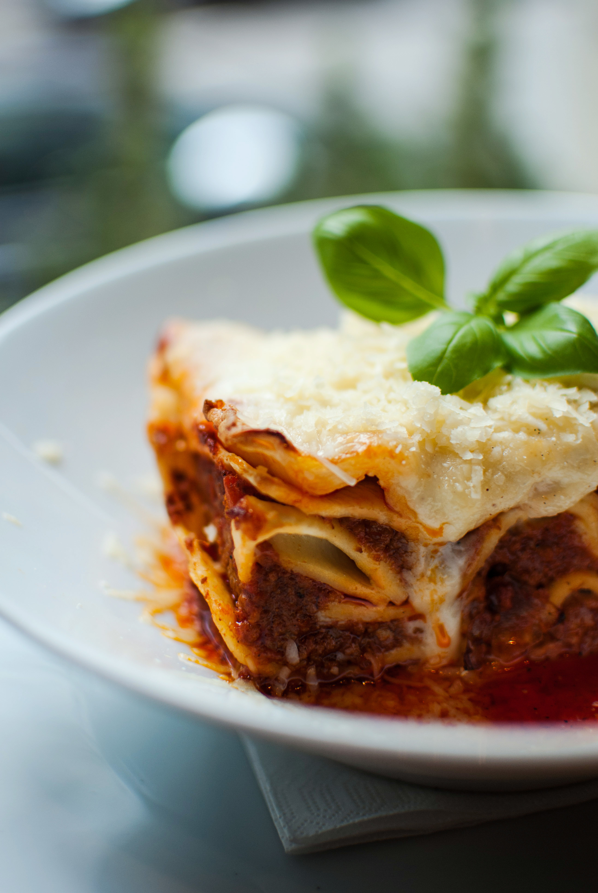
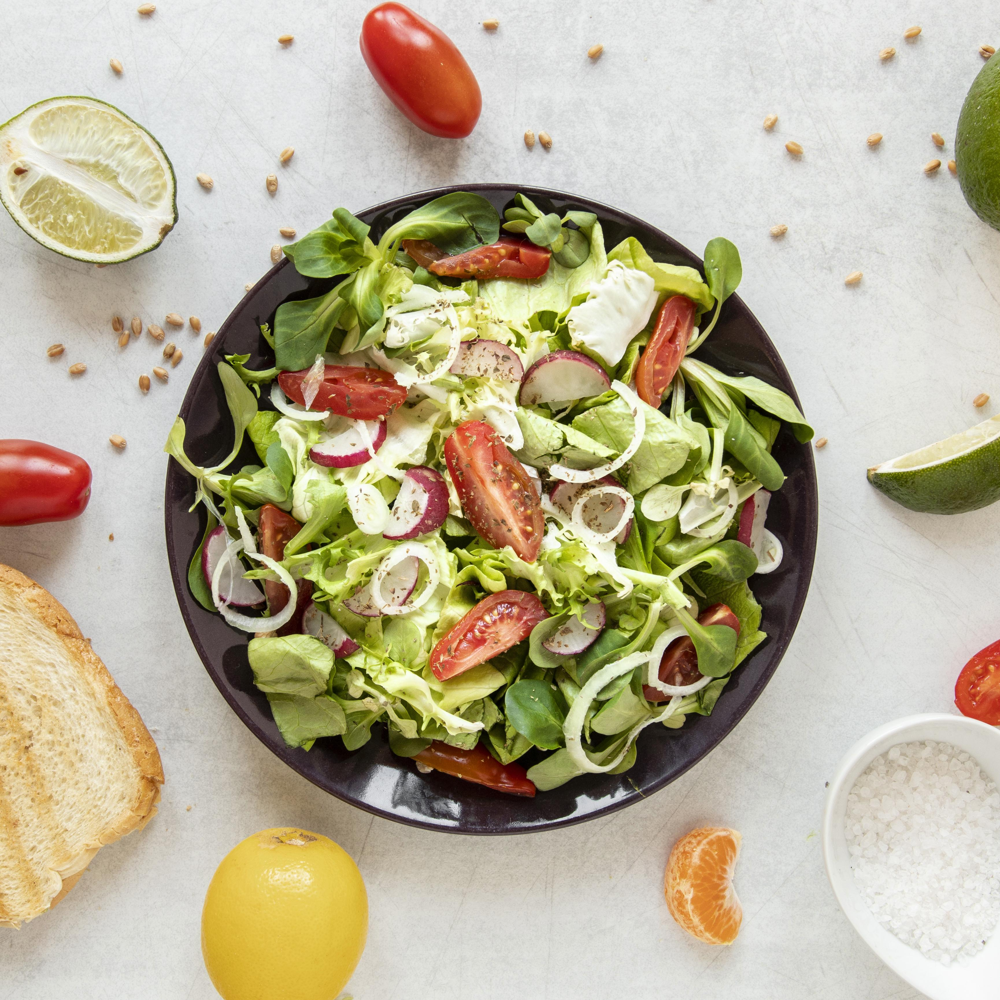

Bolo de Chocolate
Bolo fofinho e fácil de fazer.

Lasanha
Lasanha tradicional com molho especial.

Salada Saudável
Leve, nutritiva e refrescante.
O projeto Receitas Deliciosas nasceu do desejo de tornar a culinária acessível a todos. Acreditamos que cozinhar é mais do que preparar alimentos: é criar memórias, compartilhar momentos e celebrar a vida. Cada receita aqui foi pensada para ser prática, saborosa e inspiradora, trazendo o calor da cozinha para o seu dia a dia.
Bolo fofinho e fácil de fazer.

Lasanha tradicional com molho especial.

Leve, nutritiva e refrescante.